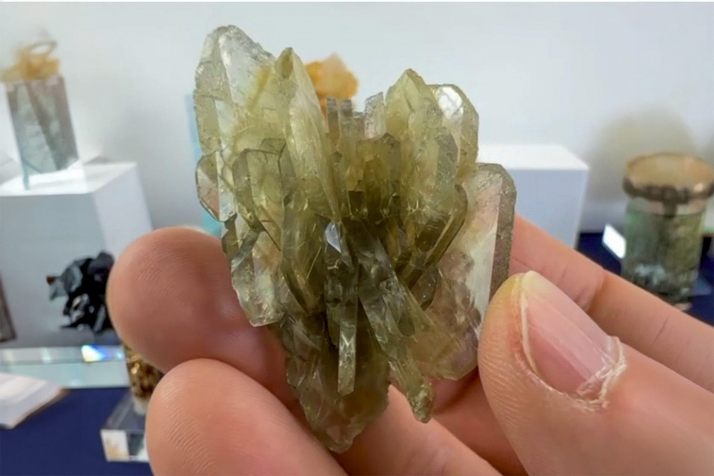

Barite
"Glassy Barite Blades"
VI-10263
Brazil
ex Luiz Alberto Dias Menezes collection
Purchased 4/30/2026 from Dedication Minerals for $125.00
Core Collection • In Collection
Details
Storage Type: Flat
Storage Location: 000 Unassigned
Size class: Miniature (47)
Dimensions: 5.6 × 2.8 × 2.7 cm
Mass: 47.76 g
Luster: Average, Vitreous